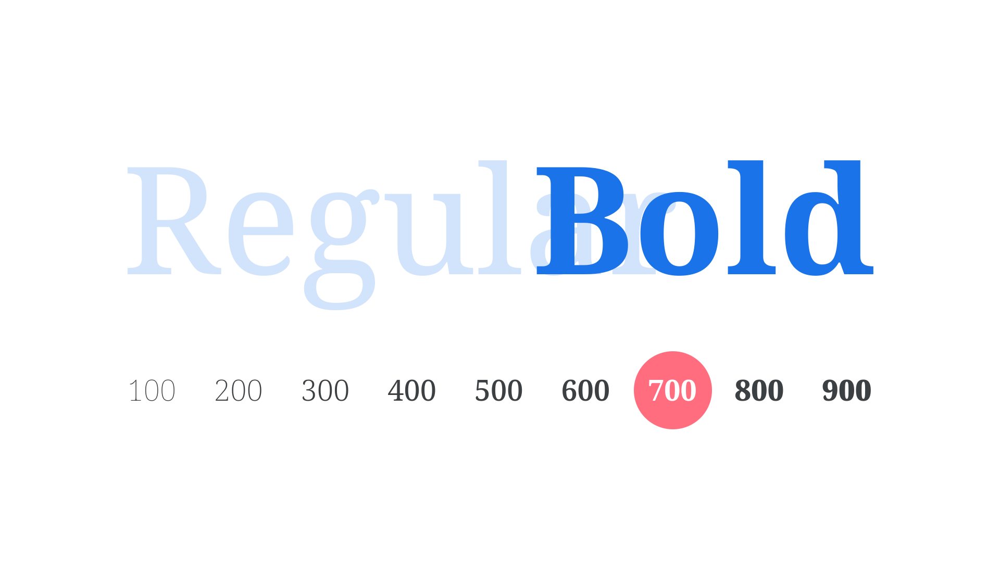

Bold
By Google Fonts Knowledge contributors · Google Fonts Knowledge.
Original article · Source on GitHub · CC BY-SA 4.0. Text, illustrations and existing credits reproduced from the licensed Knowledge repository. Open Shelf adapted the layout and links; these adaptations are also CC BY-SA 4.0. No endorsement implied.
Bold is one of the most common weights of a typeface, always with a heavier stroke than the regular/upright version. Bold is commonly used for emphasis.

Exactly how much heavier than the weight that precedes it (usually Regular, but possibly Medium), and exactly how much lighter than the weight that follows (usually Extra Bold or Black) is arbitrary, and down to the discretion of the type designer. The weight axis of variable fonts puts more of this control into the hands of the end user, but, in CSS, Bold has the font-weight value of 700.